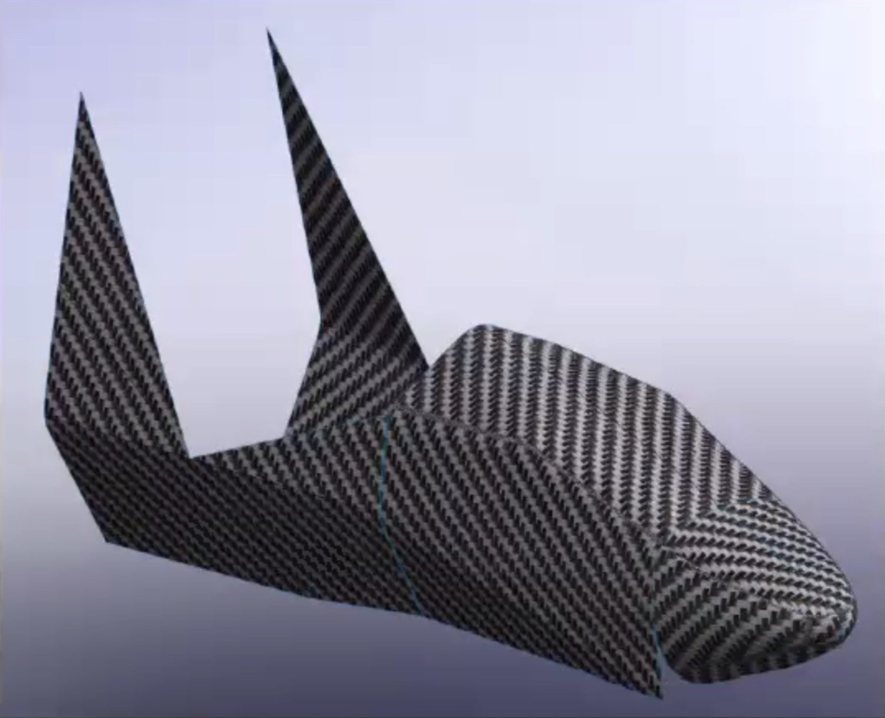
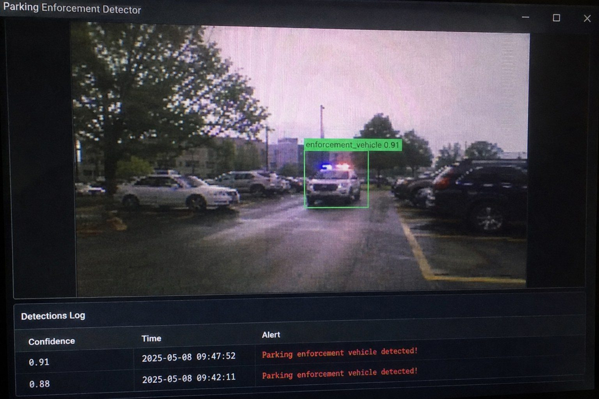
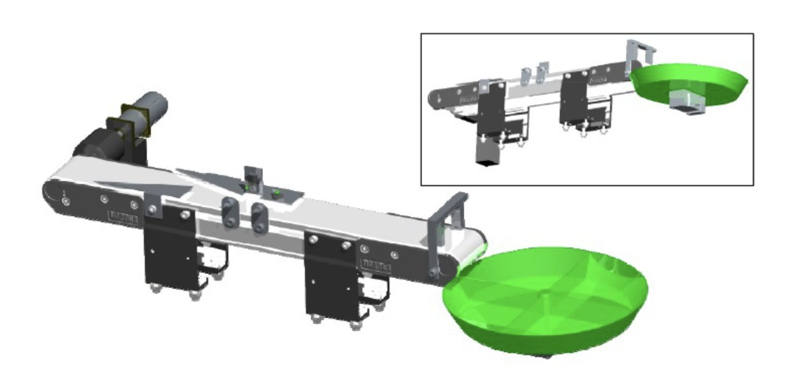

Mason Kurek
Fifth-year mechanical engineering student. I work on rockets, race-car aerodynamics, autonomous robots, and the equipment it takes to build them.
About
My name is Mason Kurek, and I am a fifth-year Mechanical Engineering student at the University of Victoria with a passion for designing and building technologies that solve real-world problems. Whether it's developing AI-powered computer vision systems, designing rocket structures, or working on electric race cars, I'm driven by projects that combine hands-on engineering with emerging technologies.
While engineering is my foundation, I have a strong passion for business, innovation, and entrepreneurship. I enjoy understanding not only how technology is designed, but also how it can be developed into products, scaled, and used to create lasting value. I believe the best engineering solutions succeed because they solve technical problems while making sense from a business perspective.
My interests revolve around aerospace, autonomous systems, robotics, AI, advanced manufacturing, and the next generation of engineering tools. Through my involvement with the UVic Rocketry team and UVic Formula Motorsport, I've gained experience designing structural components, working with composites, integrating hardware and software, and solving complex engineering challenges in fast-paced, collaborative environments. Outside my teams, I enjoy building personal projects, from Raspberry Pi-based AI systems to custom electronics, that let me experiment with new technologies and continually expand my skill set.
Friends and colleagues would describe me as ambitious, curious, and someone who enjoys tackling difficult problems. I like bringing new ideas to the table, learning quickly, and turning concepts into working prototypes. Whether I'm leading a project or supporting a team, I aim to create an environment where people can challenge assumptions, collaborate openly, and build solutions that make a meaningful impact.
Selected work
Six of fourteen wall-e/own-01.jpg
wall-e/own-01.jpgAutonomous "WALL·E" Robot
Leading a team of 10+ students building a fully autonomous robot with onboard voice processing. Wake-word detection, speech-to-text, languag...
 xenia-2/own-01.jpg
xenia-2/own-01.jpgUVic Rocketry Xenia-2
Xenia-2 was the second iteration in UVic Rocketry's Xenia-class program. I worked primarily on structures and composites, performing carbon...

fsae/own-01.jpgUVic FSAE Cars
Three years with UVic's Formula SAE team focused on aerodynamics and composite structures: sidepods, vortex generators, rear wing elements,...

parkr/own-01.jpgP.A.R.K.R.
A dashcam-based computer vision system that watches for parking enforcement vehicles from a parked car and sends a reminder to top up before...

detection-sorting/own-02.jpgDetection and Sorting System
An automated conveyor system that sorts 48 blocks across four material types (aluminum, steel, white plastic, and black plastic) in a single...
 jacobian-simulator/01.png
jacobian-simulator/01.pngJacobian Robot Simulator
A browser-based 2D kinematics simulator for building and testing arbitrary robot arms. Assemble custom joint chains with rotation and travel...
Contact
Open to co-op and new-grad roles in robotics, aerospace, and advanced manufacturing.